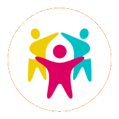
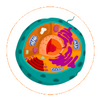
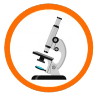
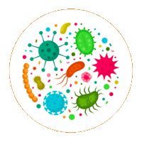

Click here for Bio 103 Responses
Science Skills
This objective is science skills and it is about discovering the natural world. My first sample of work is a bucket list of science-related experiences that I want to have within my lifetime. It shows my mastery of this objective because it sets goals with an understanding of science inherently leading to discovery and ways I could achieve those goals. My second sample of work is my notes from 1A Discovery and Cells. This shows my mastery because notes show the process of formulating an understanding of a topic and can be used again.
- Universe Simulator: I want to create a universe simulator like no other. There are games that exist that let you interact with the solar system or the known universe, however, my creation is different.The simulator will start from the atom and work its way up. This idea stemmed from one of the conversations that I had with a friend about space. I wonder if the universe reset, would that universe look the same as it is now? Will humans look different? Will Earth be the same? This simulation will be able to answer a lot of hypothetical questions in a visual manner. Yes, you will have the option to create your own universe like other games, but the main point of this project is to predict space by manipulating time. Since time travel is not possible, yet, this is a solid substitute.
- Full Immersion Virtual Reality: Virtual reality is a new medium for video games, but it is not widespread yet. Another thing with VR is that you are not able to touch, smell, nor taste. This can be achieved in one of two ways. Both require a connection to the brain, but the question is how it will be conducted. One option is to have a device implanted directly into the brain to stimulate the nerves. I understand that Elon Musk is working on similar technology with his company Neuralink. This technology could have practical applications, not just for video games. Environments, where a person can be physically harmed, can be replaced with this technology. The other option is having a helmet that transmits waves instead of a direct connection. I am not sure of its harmful potential in nature. I doubt it would be a big problem because we are already living in a world full of waves (but then again, those waves are not directly targeting the brain). I need to research more about the physics of waves. So far what I am sure of is that waves operate in a spectrum, a range measured in frequency and length.
- Record Dreams: I realized that I often forget about dreams just ten minutes after waking up. There is technology, being researched in Japan, that is already being developed by using AI to draw whatever image a person is thinking of. However, it is in its early stage and the image can only be done in black and white. This technology could change the environment of artists. If this existed for mass media, a person could just think of what they want instead of hiring a person to draw.
- Audio duplication: I want an AI system to duplicate the way I speak. Why? Just because :). This project is more about understanding AI development fundamentals than worldly achievement.
- Aliens: I want to live long enough to see on the news that another habitable planet has been discovered with life. Fundamentally it makes no sense to me why there wouldn’t be more life in space since it's continuously expanding. I understand that human history is literally nothing compared to how long Earth has existed, but our technology has improved exponentially in a short amount of time. I am hopeful.
Science Connections

The thing with Artificial Intelligence (AI) is that there is a stereotype,
almost a misconception, that they are or will be equal to human intelligence.
So far, in the current climate, this is wrong.
Majority of the use of AI in the tech industry is to enhance an already existing product.
It is a tool.
You can’t communicate with it unless the entire purpose of the AI was to communicate with a person.
As of now, people should understand that AI is a set of instructions with a goal,
like all other programs and softwares created from code.
“As of now” is stated because only research groups have made progress towards AI becoming more “human.”
Of all the AI that exists in the world, most likely 5% at most is geared towards that field.
Everything else is to increase the performance of the consumer experience.
That being said, the discussion of AI ethics is still relevant for the purpose of
being prepared when technology advances enough to create humanlike AI.
Bibliography
Nalini, B. “The Hitchhiker’s Guide to AI Ethics,”
Towards Data Science, May 1, 2019.
https://towardsdatascience.com/ethics-of-ai-a-comprehensive-primer-1bfd039124b0
Biology concepts


This is a matching game.
This is a way for people to give themselves a quick memory test to see
if they remember all the parts of a gastrointestinal tract (GIT).
Biology Skills

This objective is biology skills and it is about researching organisms and environments. My first sample of work is a list of qualitative and quantitative aspects of my body data collection study. It shows my mastery of this objective because it shows my understanding of research. Finding the qualitative and quantitative parts of research answers why a study is being conducted and acts like a guide to how it will be conducted. My second sample of work is the data that I have collected based on three aspects; what I eat, how active I am, and how much sleep I get daily. This shows my mastery of biology skills because it is an application of the qualitative and quantitative parts of my research.
Qualitative
- Things that affect my food intake
- - Amount of food I want to cook/eat
- - Having enough time to cook/eat
- - Having hunger to cook/eat
- Things that affect how much exercise I do
- - The want to exercise
- - The time to exercise
- - Wanting to be safe and social distance
- Things that affect how much sleep I get
- - Amount of work I need to do
- - Phone time (or any entertainment)
- - How tired I am
- - Where I sleep
Qualitative
- Food
- - I could generate a list of things that I can cook and just pick one from that list so I don’t have to second guess myself.
- Exercise
- - If there are people on the basketball court, I can’t really do much about that
- - However, I should try to just go outside for at least an hour per week. If I can’t play ball, just run or walk. At least move around and be outside in the sun.
- Sleep
- - I could limit the amount of time that I spend on entertainment. Two hours per day max
Traditional Korean Meal: consists of a bowl of rice, a bunch of side dishes (kimchi, seaweed salad, stir fried dried anchovies, seasoned spinach, cucumber kimchi, radish kimchi, glazed potatoes, soy braised eggs), and sometimes soup (if soup is present, then that will be noted instead)
Biology connections
Week 6 Reflection
Sleep is definitly not going well.
I am not exercising as much as I planned
(I even stated that going outside would be better than nothing).
Food intake has gotten lazy. My focus of this is not to solve all three
problems (eating better, exercising more, and more sleep).
It just seeing better change over time to anything.
I will try to commit to 2 hour maximum time spent on my phone
to see if that solves anything. This is based on the 5A media.
Week 10 Reflection
Human concepts

Digestion game
Title: Crazy Digestion
Age level: 3 and older
There will be two decks of cards.
One with the vocab and the other being the "definitions".
Each player has 5 definition cards.
The game starts with the vocab deck displaying one card at the top.
Whoever matches that card with its corresponding definition first,
gets to keep the vocab card.
Each card won is worth a point.
The winner is whoever has the most vocab cards.
If you don’t have the right definition,
you better start drawing more definition cards!